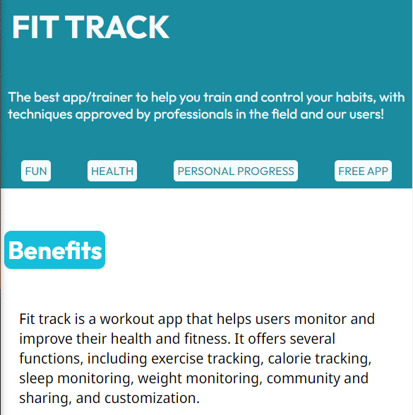

Projects
Etch-a-Sketch

Landing Page for "FitTrack"
Library APP

+
Hello, my name is Luis Fellipe and I am a front-end developer from Teresina-Brazil. With a passion for technology and a love for creativity.
As a front-end developer, I love stunning web-sites and creative ideas, I constantly try to evolve to become better at what I do, studying new frameworks and technologies, always trying to evolve and improve in my own development both as a developer and personally.
Most of my life was with the presence of the internet and technology, which is the main reason for my passion. I'm currently studying Software Engineering at ICEV, always looking to learn more.